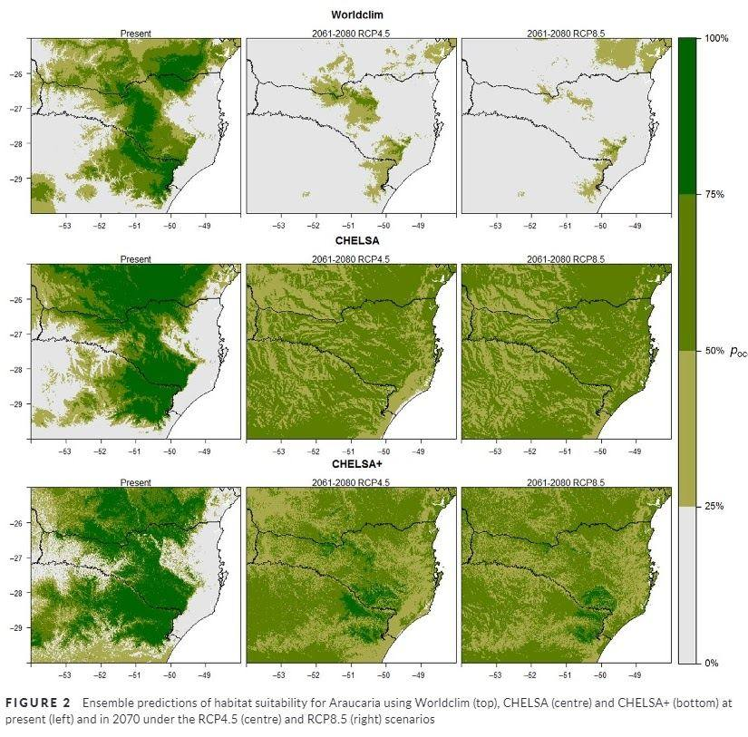
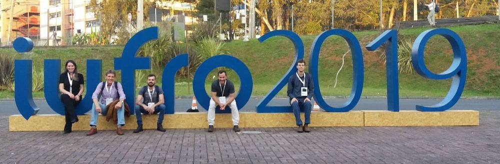

Artigo aborda efeitos de mudanças climáticas sobre o futuro da Araucária
Quinta, 24 Outubro 2019
Cada espécie de árvore vive num “nicho”, com clima e solo preferencial. A araucária necessita do clima frio e úmido; ela está adaptada e é competitiva neste clima. O estudo publicado na revista inglesa “Global Change Biology” mapeou as áreas hoje ocupadas pela espécie, de acordo com o seu clima. Depois foram estimadas as temperaturas nestas áreas sob efeito das mudanças climáticas (aplicando vários “cenários”) e em função de sua topografia.
Por fim, foram mapeadas as poucas áreas que, mesmo sob efeito das mudanças climáticas, ainda serão toleráveis para a araucária: chegamos a 3,5% das áreas florestais de hoje e a 28% das áreas dos campos naturais (acima de 1500m de altitude).
Nos campos de altitude hoje não é observada a presença da araucária, mas eles provavelmente serão ocupados pela espécie, em função da elevação prevista das temperaturas. Está já ocorreu no Brasil (cerca de 1,5 graus entre 1900 e 2018) e ocorrerá, de forma mais acentuada, nas próximas décadas (entre 2 a 6 graus até 2100, dependendo do sucesso de iniciativas de redução das emissões de gases causadoras do efeito estufa, como o Acordo de Paris).
Ao considerar altitude e relevo do terreno, no entanto, foi possível identificar também áreas especiais, chamadas de “microrefúgios”. São vales de pequenos rios na serra e no planalto, nas quais as temperaturas serão mais baixas e a umidade maior do que nos arredores. Estes lugares, com grande probabilidade, também poderão abrigar a araucária no futuro. Como apenas uma pequena parte destes está localizada em unidades de conservação (parques Nacionais e Estaduais), estes refúgios necessitam de proteção para que a espécie possa sobreviver neles.
A araucária já mostrou essa sua capacidade de sobreviver em pequenos espaços em condições adversas e de se expandir, em seguida, após o clima se tornar novamente mais favorável. Isto correu há cerca de 3.200 anos, quando a araucária se expandiu após ter sobrevivido um período muito frio e seco que reinou após a última época glacial há cerca de 18 mil anos.
Nas demais áreas hoje ocupadas pela floresta com araucárias, a espécie sofrerá forte competição das espécies folhosas adaptadas ao clima mais quente, e não terá condições de regenerar-se. Portanto, grandes mudanças na distribuição das florestas catarinenses estão à vista e irão impactar fortemente a nossa vida. O que deve ser feito para minimizar estes efeitos?
a) devemos proteger as áreas remanescentes onde ocorre a araucária, para que teremos sementes para o reflorestamento;
b) devemos plantar araucárias, especialmente em áreas resilientes (menos impactadas pelas mudanças do clima);
c) devemos diminuir as nossas emissões e CO2: reduzir o desmatamento e reduzir a queima de combustíveis fosseis (óleo diesel, gasolina nos meios de transporte e nas indústrias)
..... Por fim, precisamos reconhecer a existência das mudanças climáticas e as políticas públicas precisam ser adaptadas para minimizá-las!

Equipe do IFFSC participou do maior evento mundial em pesquisa florestal
Sexta, 11 Outubro 2019
A IUFRO (International Union of Forest Research Organizations) é uma organização com 127 anos de história e que tem realizado o congresso florestal mundial a cada 4-5 anos em diferentes partes do mundo. Em sua 25° edição, esta foi a primeira vez que o congresso aconteceu na América Latina. A equipe do IFFSC, é claro, não poderia perder esta oportunidade de expor os resultados de suas pesquisas.

O evento foi realizado em Curitiba (PR), de 29/09 a 05/10, e foi organizado pelo Serviço Florestal Brasileiro e Embrapa. Foram mais de 2500 cientistas, de mais de 90 países, trocando informações e conhecimento sobre inovações tecnológicas, resultados recentes de pesquisa e as tendências para o futuro da pesquisa florestal em todo o mundo.
A equipe do IFFSC foi representada no evento por seis pesquisadores: Alexander C. Vibrans, Daniel A. da Silva, Débora V. Lingner, Heitor P. Uller, Janine K. Likoski e Laio Z. Oliveira.
Os pesquisadores participaram das sessões plenárias e técnicas, sessões de poster e de eventos paralelos, realizando apresentações orais e de poster, divulgando o projeto, e estabelecendo contato com pesquisadores do Brasil e de outros países.
A equipe realizou ao todo 4 apresentações orais e 5 apresentações de poster, a seguir:
Para o time do IFFSC, participar de um evento dessa abrangência, representou mais do que adquirir novos conhecimento. Também foi uma oportunidade de compartilhar experiências, buscar inspirações para estudos futuros, e trocar contatos com outros cientistas e instituições na expectativa de estabelecer futuras parcerias.
A próxima edição do Congresso Mundial da IUFRO vai acontecer em 2024, na capital da Suécia, Estocolmo.
Publicação na revista Scientia Agricola traz os principais resultados do IFFSC
Segunda, 05 Agosto 2019
No artigo Insights from a large-scale inventory in the southern Brazilian Atlantic Forest, publicado recentemente na revista Scientia Agricola, são apresentados, de forma sintética, os principais resultados do 1° Ciclo de Medições (2007 a 2010) do IFFSC.
Um dos principais desafios de um inventário que abrange grandes áreas e que estuda florestas com grande biodiversidade é a definição do desenho e da intensidade amostral adequados para obter estimativas confiáveis sobre a riqueza de espécies e os atributos estruturais das florestas. Para lidar com esta questão, o IFFSC trabalhou na concepção de um conjunto de dados oriundos de 418 parcelas distribuídas sistematicamente ao longo de todo o território catarinense.
A partir deste conjunto de dados, foram geradas estimativas dos principais atributos florestais, tanto das árvores vivas, como das mortas para cada um dos três tipos de floresta do estado (tabela ao lado).
Também foram avaliadas a suficiência amostral, levando em consideração variáveis como n° de indivíduos, área basal e volume do fuste, e a representatividade dos dados florísticos. Outro ponto interessante demonstrado pelo estudo é que as estimativas não se tornaram significativamente mais precisas quando mais de 70% das amostras foram utilizadas nas análises, o que sugere que o esforço amostral poderia ser reduzido em futuras remedições da floresta.
Através do estudo, também ficou evidenciado o efeito dos impactos antrópicos sobre a conservação da floresta. Embora as florestas do nosso estado abriguem uma alta diversidade de espécies - 831 espécies arbóreas/arbustivas registradas no total – as florestas amostradas apresentam menor riqueza de espécies, área basal, volume de fuste e biomassa quando comparadas com florestas antigas. A extração ilegal de madeira e a pecuária extensiva são os principais fatores que contribuem para a perda de biodiversidade e produtividade da floresta.
Confira aqui a versão online do artigo.
Esta e outras publicações também podem ser encontradas na seção de Publicações Científicas do nosso site.
A terceira publicação na Revista Nature
Sexta, 17 Maio 2019
O trabalho do IFFSC continua tendo alcance internacional e mais uma vez fez parte de um estudo publicado na Revista Nature. Esta revista científica é uma das mais conceituadas no mundo e possui um público online de cerca de 3 milhões de leitores individuais por mês.
O artigo tem o título Climatic controls of decomposition drive the global biogeography of forest - tree symbioses. André Luis de Gasper, integrante do projeto, é co-autor nesta publicação e participou do estudo junto com pesquisadores da Universidade de Stanford e mais de 200 cientistas.
No estudo foram mapeadas relações simbióticas entre árvores e micro-organismos em todo o mundo. Os dados usados no projeto reúnem mais de um milhão de parcelas de inventários florestais regionais e nacionais, integradas pelo consórcio Global Forest Biodiversity Initiative (GFBI), ao qual o IFFSC faz parte.
Foram estudados os padrões de onde as raízes das plantas formam relações simbióticas com fungos e bactérias. Conforme o artigo científico, “dentro e ao redor das raízes emaranhadas do chão da floresta fungos e bactérias crescem com as árvores, trocando nutrientes por carbono.” Com a pesquisa, “um novo esforço para mapear o mais abundante desses relacionamentos simbióticos - envolvendo mais de 1,1 milhão de florestas e 28.000 espécies de árvores - revelou fatores que determinam onde os diferentes tipos de simbiontes irão florescer.” Os pesquisadores assinalam que “o trabalho pode ajudar os cientistas a entender como as parcerias simbióticas estruturam as florestas do mundo e como elas podem ser afetadas por um clima mais quente”. O estudo realizou uma projeção da mudança de simbioses até 2070, se as emissões de carbono continuassem inalteradas. Este cenário resultou em uma redução de 10% na biomassa de espécies de árvores que se associam a um tipo de fungo encontrado principalmente em regiões mais frias. Os pesquisadores alertaram que tal perda poderia levar a mais carbono na atmosfera, porque esses fungos tendem a aumentar a quantidade de carbono armazenada no solo”.
Em 2015, outra publicação com participação do IFFSC saiu na Revista Nature, com o título Mapping tree density at a global scale, no qual o idealizador do projeto, prof. Alexander C. Vibrans, foi co-autor. O estudo até emplacou na capa da revista.
Monitora-SC/IFFSC no XIX Simpósio Brasileiro de Sensoriamento Remoto
Quinta, 25 Abril 2019
Ocorreu em Santos (SP), entre os dias 14 e 17 de abril, o XIX Simpósio Brasileiro de Sensoriamento Remoto - SBSR, organizado pelo INPE e Selper Brasil. O Simpósio é realizado a cada dois anos e tem como objetivo reunir a comunidade técnico-científica e o usuário empresarial das áreas de Sensoriamento Remoto e Geotecnologias para a apresentação de trabalhos e debates sobre as pesquisas, desenvolvimento tecnológico, ensino e a política científica realizados no país e no mundo.
Participaram no evento os engenheiros florestais e pesquisadores, Adilson Luiz Nicoletti, Alexander Christian Vibrans e Marcus Boeno, os quais estão envolvidos no Projeto Monitoramento das Florestas em Santa Catarina - MonitoraSC, integrado ao IFFSC. O MonitoraSC tem como propósito monitorar e mapear a cobertura de uso da Terra do estado e integrar observações de campo do IFFSC com dados de Sensoriamento Remoto.
Durante o evento, os pesquisadores tiveram a oportunidade de conhecer novas tecnologias, ferramentas e metodologias em Sensoriamento Remoto por meio de palestras e cursos, bem como ampliar contatos técnico-científicos. A equipe do MonitoraSC também apresentou dois trabalhos no evento para divulgar alguns dos resultados do projeto obtidos até o momento:
1) Nicoletti, A.L.; Boeno, M.M.; Pessatti, T.B. et al. Acurácia de mapeamentos de florestas nativas e plantadas em Santa Catarina, sul do Brasil. Resumo
2) Boeno, M.M.; Nicoletti, A.L.; Bizon, A.R. et al. Effects of topographic correction methods on natural forest reflectance in a montanious region of southern brazil. Resumo
Fotógrafo profissional do Serviço Florestal Brasileiro registra os trabalhos do IFFSC
Sexta, 01 Março 2019
A equipe de campo do IFFSC foi acompanhada na sua campanha de fevereiro de 2019, realizada na região de Urubici, pelo fotografo André Dib Ferreira, contratado pelo Serviço Florestal Brasileiro para documentar os trabalhos das equipes do Inventário Florestal Nacional em todo o Brasil.
Um dos pontos altos da campanha foi o retorno à unidade amostral 193, situada na cabeceira do Canion dos Espraiados. Esta parcela está localizada em Floresta Altomontana, em altitude de 1.450m na região também conhecida por "Campo dos Padres". A parcela tinha sido medida na primeira vez em março de 2009. Com a nova medição deste ano será possível quantificar as mudanças que o crescimento e a mortalidade das árvores causaram na composição da vegetação e no seu estoque de biomassa e carbono.
A beleza das paisagens do local é de tirar o fôlego e pode ser conferida nas fotos abaixo.
Mais uma nova espécie encontrada!
Terça, 12 Fevereiro 2019
Begonia trevisoensis, da família Begoniaceae, recebeu este nome em homenagem ao município de Treviso (Sul catarinense), onde esta nova espécie foi encontrada.
A coleta da espécie foi realizada pela primeira vez em 2009, pela bióloga Juliane Luzia Schmitt Pereira e colaboradores, durante o levantamento de epífitas, realizado no 1° Ciclo do IFFSC. A planta foi localizada em uma área de Floresta Ombrófila Densa relativamente bem preservada, na localidade de Nova Brasília, Treviso, a 572 m a.s.l. A coleta está tombada no Herbário Dr. Roberto Miguel Klein da FURB, sob número 698, e pode ser consultada no Herbário Virtual Reflora através do código FURB1520.
A espécie foi descrita por Julio C. Jaramillo, Ludovic Jean Charles Kollmann e Pedro Fiaschi, na revista internacional Phytotaxa. Ao estudar as Begonias de Santa Catarina, o pesquisador Julio Jaramillo identificou esta nova espécie, após visitar o Herbário da FURB.
Confira aqui a publicação com a descrição detalhada sobre a nova espécie.
Participação em oficina sobre Planos de Ação Nacional e Corredores Ecológicos
Sexta, 08 Fevereiro 2019
Nos dias 06 e 07 de fevereiro, os integrantes do IFFSC, Débora Vanessa Lingner e Laio Zimermann Oliveira, participaram de uma oficina coordenada pelo Instituto do Meio Ambiente de SC – IMA. O evento ocorreu no Centro de Treinamento da Epagri (CETREJO), em São Joaquim (SC).
Também estiveram presentes na oficina, integrantes do MMA, ICMBio, WWF Brasil, IMA, CNCFlora, SDS, SEMA-RS, Epagri, UFRGS, Apremavi, Projeto Charão-UPF, Fundação Certi e Fundação Grupo Boticário.
Os objetivos da oficina eram: (1) preparação para a elaboração do Plano de Ação Nacional (PAN) do território “Planalto Sul”; e (2) discussão da proposta de criação de um novo corredor ecológico em Santa Catarina.
O PAN “Planalto Sul” abrange parte do território dos estados de Santa Catarina e do Rio Grande do Sul - Serra Catarinense e Gaúcha - e será coordenado pelo IMA, em parceria com a Secretaria do Meio Ambiente e Infraestrutura (Sema). Este PAN integra o projeto GEF-Pró-Espécies, uma Estratégia Nacional para Conservação de Espécies Ameaçadas de Extinção, que conta com recursos do Fundo Mundial para o Meio Ambiente (GEF, da sigla em inglês para Global Environment FacilityTrust Fund). O projeto é uma iniciativa do Ministério do Meio Ambiente (MMA), que busca minimizar os impactos sobre as espécies ameaçadas no Brasil, em especial aquelas criticamente em perigo de extinção que não estão em áreas protegidas, nem são contempladas por instrumentos de conservação.
O novo Corredor Ecológico que está sendo proposto para Santa Catarina abrange boa parte da região do Planalto Serrano. O Corredor Ecológico corresponde a uma área com importantes remanescentes de vegetação nativa, cujo foco é aumentar o intercâmbio entre espécies da fauna e flora e integrar desenvolvimento econômico à conservação da biodiversidade. Até o momento, já foram implementados em Santa Catarina dois Corredores Ecológicos nas Bacias Hidrográficas dos rios Chapecó e Timbó que somam 10 mil km², em 34 municípios.
Acompanhe também nossas redes sociais para ficar por dentro das ações do projeto.
FlorestaSC
florestasc@furb.br 47 3221-6100
Página migrada de floresta.sc.gov.br.